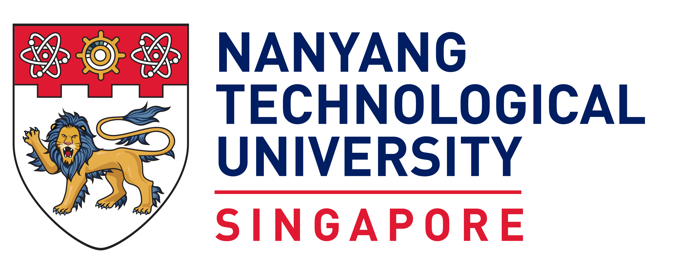
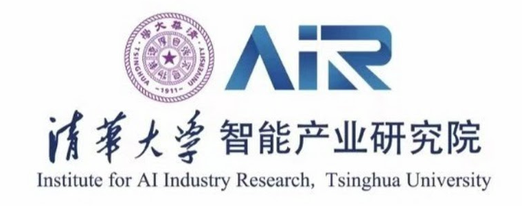
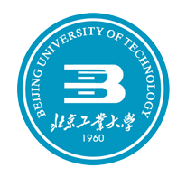
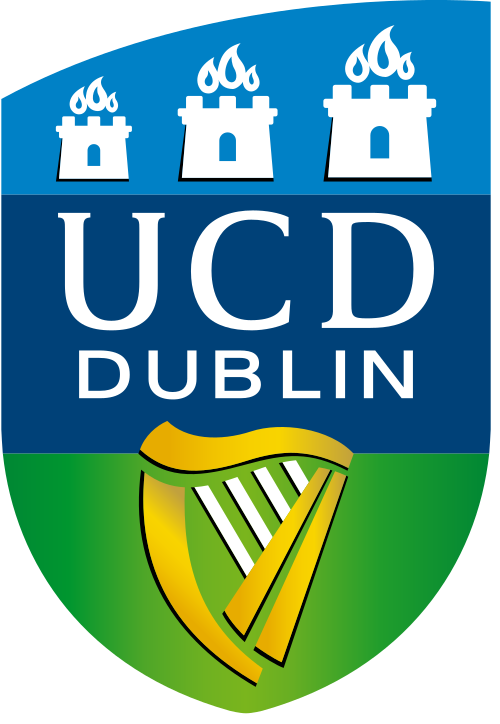
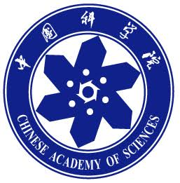
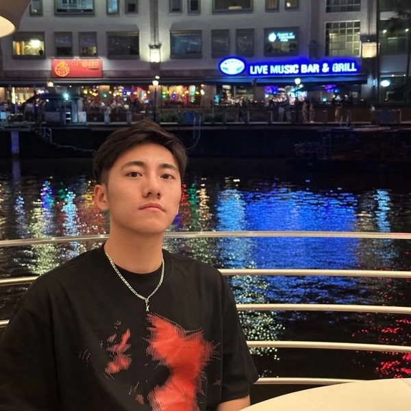

MSc student in Signal Processing and Machine Learning, Nanyang Technological University
I am an MSc student at Nanyang Technological University (NTU), Singapore, advised by Prof. Weichen Liu, and a long-term joint-training student at the Institute for AI Industry Research (AIR), Tsinghua University, advised by Prof. Kun Li. In 2025 I received dual B.Eng. degrees in Electronic & Information Engineering from Beijing University of Technology and University College Dublin (QS ranked 100), with a minor in Innovation & Entrepreneurship, advised by Prof. Wenli Zhang (Chief Scientist of a National Key R&D Program project). I also spent a year as a research intern at the Institute of Microelectronics, Chinese Academy of Sciences, working with Prof. Qinzhi Xu.
My research interests lie at the intersection of efficient AI systems and physics AI, including World Action Models, efficient inference and optimization for visual language models, and neural operators for thermal analysis of chiplet systems. I envision building efficient and trustworthy AI systems that understand and interact with the physical world.






Microelectronics Reliability, Elsevier, 2026 · First Author
@article{ren2026hard,
title = {Hard Constraint Projection Enhanced Neural Operator with Hybrid Sampling for Chiplet System Thermal Analysis},
author = {Ren, Wentao and Ke, Zihan and Xu, Qinzhi and others},
journal = {Microelectronics Reliability},
year = {2026},
doi = {10.1016/j.microrel.2026.116207}
}
BitsMoE: Efficient Spectral Energy-Guided Bit Allocation for MoE LLM Quantization
Under review, 2026
SlimKV: Joint Token-Feature KV Cache Compression with Reconstruction-Free Beacon Attention
EMNLP 2026 Main Conference, Accepted
A Method and Application for Testing the Extinction Coefficient of a Solution
Chinese Invention Patent, CN118706767A, 2024 · Second Student Inventor
Artificial Intelligence Technology in Alzheimer's Disease Research
Intractable & Rare Diseases Research, 2023 · Second Student Author · Cited by 65
Embodied AI World Model Algorithms
Long-term Joint-Training Student · Institute for AI Industry Research (AIR), Tsinghua University · Advisor: Prof. Kun Li · May 2026 – Present
AI-Assisted Analog Integrated Circuit Design
Graduation Project · A*STAR, Singapore · Advisor: Dr. Yuan Gao · Aug 2025 – Present
Efficient Inference and Compression for Multimodal LLMs
Research Assistant · Nanyang Technological University · Advisor: Prof. Weichen Liu · Aug 2025 – May 2026
PINN Thermal Modeling of Chiplet Heterogeneous Integration
Research Intern · Institute of Microelectronics, Chinese Academy of Sciences · Advisor: Prof. Qinzhi Xu · Jul 2024 – Nov 2025
Bionic Hand & EMG Human-Machine Interface — National Key R&D Program Project
Research Group of Prof. Wenli Zhang (Chief Scientist of a National Key R&D Program project) · BJUT · Jul 2023 – Jul 2025
MSc in Signal Processing and Machine Learning
Nanyang Technological University, Singapore
Dual B.Eng. in Electronic & Information Engineering
Beijing University of Technology & University College Dublin
Minor in Innovation & Entrepreneurship
Massachusetts Institute of Technology, Cambridge, MA
MIT xPRO – Blended AI+X Program · Online courses on AI fundamentals and cross-disciplinary applications, combined with an on-site workshop series and project-based mentoring.
Nanyang Technological University, Singapore
Winter Program · AI ethics, business strategy, business networks of overseas entrepreneurs, multinational enterprise management, AI frontiers and industry trends, and public policy.
Imperial College London, UK
Winter Program · Innovation in robotics, the Internet of Things (IoT), and artificial intelligence.